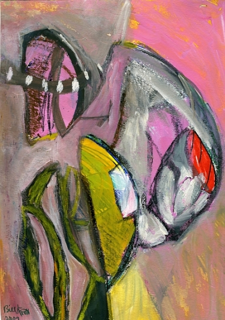
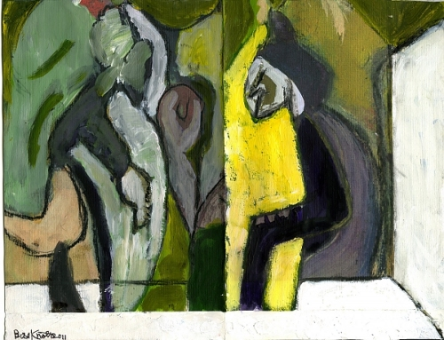
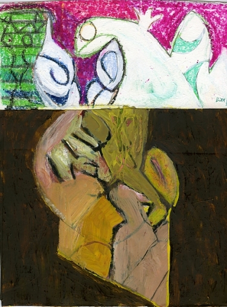
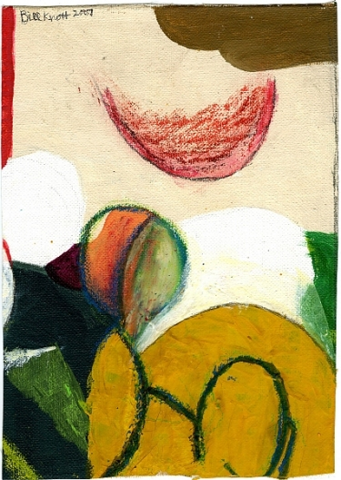
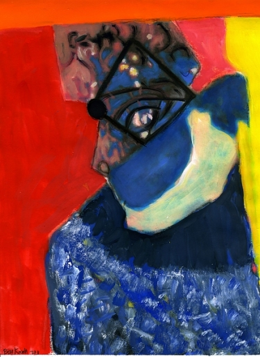

Featured Artist: Bill Knott by Staff You probably know Bill Knott as the quirkily brilliant poet who’s been giving his work away for free on Lulu.com. Our last issue included his sonnet, 1946, and ten of his short poems. Reading the short poems, you may have noticed that the accompanying artwork, “dismay dancer,” was also by Bill Knott. In this issue, we’ve paired his Salon Poem in Leafgravure with another of his paintings.
Five more of Bill Knott’s paintings are shown below. Click on the image to go directly to the page where you can buy the piece. To see and buy more of his artwork, visit the site home page at billknottart.com.
Open Mic Night

please don’t appear before the seance begins

A Head Above

Moonrise

Arcane Figure

|